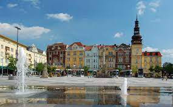

😐
Klikněte na Zde pro rick roll.<<<----
---->>>
<<<----->>>
¨

Ostrava (polsky Ostrawa, německy Ostrau) je statutární, krajské a univerzitní město na severovýchodě Česka v Moravskoslezském kraji, poblíž hranice s Polskem. Nachází se na soutoku řek Odry, Opavy, Ostravice a Lučiny. Ostrava je počtem obyvatel i rozlohou třetí největší město v Česku, druhé největší město na Moravě a největší město v Českém Slezsku (leží na hranici těchto dvou historických zemí). Žije zde přibližně 288 tisíc obyvatel, v celé ostravské aglomeraci už ale žije téměř 1 milion obyvatel, která je tak po pražské druhou největší aglomerací v Česku. Společně s polskými Katovicemi tvoří Slezskou metropolitní oblast s 5,3 miliony obyvatel. Ostrava vyrostla jako průmyslové středisko černouhelné pánve. Pro svůj hornický a hutnický průmysl v minulosti zvaná „ocelové srdce republiky“, prošla výraznými změnami po roce 1989. V důsledku restrukturalizace průmyslu byla utlumena důlní činnost a poslední uhlí se na území města vytěžilo v roce 1994. Svědkem hornické minulosti je Dolní oblast Vítkovice, bývalý průmyslový areál s unikátním souborem industriální architektury aspirující na zápis do seznamu Světového dědictví UNESCO. V Ostravě se nachází řada divadel, galerií a kulturních domů. Mezi nejznámější kulturní akce pořádané ve městě patří hudební festivaly Colours of Ostrava a Beats for Love, festivaly vážné hudby Janáčkův máj a Svatováclavský hudební festival, Shakespearovské slavnosti. Každoročně se koná také atletický závod Zlatá tretra. Vysoké školství je v Ostravě zastoupeno Vysokou školou báňskou – Technickou univerzitou Ostrava a všeobecněji zaměřenou Ostravskou univerzitou. Pro rok 2014 byla Ostrava evropským městem sportu. V letech 2004 a 2015 pořádala společně s Prahou mistrovství světa IIHF v ledním hokeji. Na začátku roku 2017 se v Ostravě konalo Mistrovství Evropy v krasobruslení a v září 2018 se na Městském stadionu uskutečnil IIAF Kontinentální pohár. Na přelomu let 2019 a 2020 hostila Ostrava spolu s Třincem hokejové Mistrovství světa juniorů.ING. G-MAN
Zdroje na články
Formule 1: Zde. Ostrava: Zde.